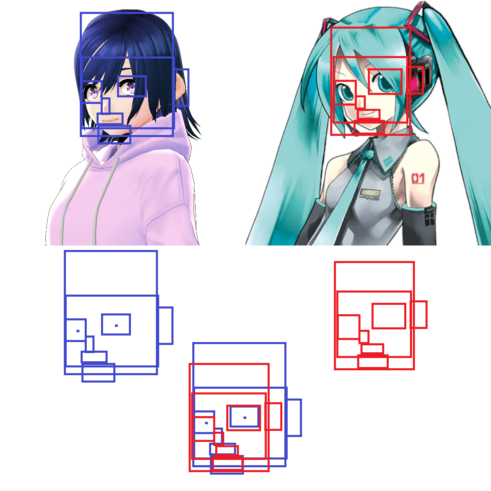

Hi, my name's Blargg, and I look like Hatsune Miku. I've had lots of people stop me on the streets, ask me about Crypton and vocal tuning and things like that, and I thought I'd create a page to clarify that I am, in fact, NOT Hatsune Miku. Please note:
I am NOT Hatsune Miku, we just look alike.
We are not in any way related (to the best of my knowledge).
We have worked on music together, but that is it, we have had no other kind of relationship.
Again, we have NOT had any sexual relationships or interactions. These are JUST RUMORS.
So please, if you see me on the street, don't come up to me asking if I'm Hatsune Miku. I'm not. She has bodyguards and dresses better. If you're walking down the street, and think you seeHatsune Miku, WAIT, do not go up to her, because it might just be me.
The resemblance is not only skin deep. We have many non-physical similarities. Miku makes music. I have made music. Miku likes sweets. I like sweets. Miku is the #1 princess in the world. I may one day marry a princess. Miku is a world famous idol. I am verified on Spotify.
But then, there are many physical similarities. We're both approximately the same height, different by only a few inches. Our hair is the same color (blue), though hers is much longer so it's hard to tell.
Let's look at our faces. Overall, our faces are about the same. Same number of eyes, noses, ears. But let's look deeper. Let's look at the facial structure.

I drew all sorts of lines all over the images to make it look like facial recognition stuff. Notice how similar the lines are! It's not just coincidence! We really look alike.
Miku and I are different in some ways. For example:
We are both half human. Miku's other half is robot, but my other half is also human.
Another diffence: Miku is 5'2" tall, I am not 5'2", but I'm similar.